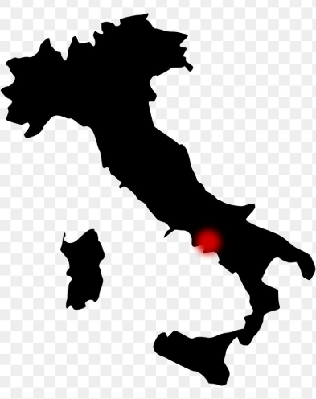

Fusilli

Fusilli origins
✨ Born in Southern Italy, Fusilli is a pasta with a twist—literally! Originally crafted by rolling pasta dough around thin rods, its spring-like shape was inspired by the spinning spindles used in traditional Italian weaving.
🍽️ From rustic kitchens in Campania to modern plates worldwide, Fusilli remains a favorite for sauces that need a pasta with grip. Whether it's creamy ricotta, rich tomato, or fragrant pesto, this pasta locks in flavor, ensuring every forkful is a delight.
💡 Did You Know? In some regions, Fusilli is still hand-rolled into long spirals, giving it a unique, artisanal feel!